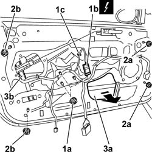

7005M20 FRONT SIDE DOOR ELECTRIC WINDOW SYSTEM - R R WITH DOOR PANEL/SUPPORT FRAME REMOVED
- Path
- Procedures > 70 FITTINGS > 7005 PASSENGER COMPARTMENT FRONT SIDE DOORS > 7005M FRONT ELECTRIC WINDOWS > 7005M20 FRONT SIDE DOOR ELECTRIC WINDOW SYSTEM - R R WITH DOOR PANEL/SUPPORT FRAME REMOVED
- Kind
- repair procedure (removal / refitting; the operation number is the code)
- Applies to
- all engines; all production periods
- Interactive page
- https://sloeber94.github.io/elrnDB-aGt/en/#/125001794
Applies to: all engines; all production periods
 Removing
Removing
 Refitting
RefittingOp. 5570T90 FRONT SPEAKER - R R
Op. 7005M40 FRONT ELECTRIC WINDOW SYSTEM ECU - R+R FOLLOWING ELECTRICAL WIRING CHECK
Op. 7005A04 FRONT SIDE DOOR WATER GUARD PROTECTION - R R OR REPLACE WITH DOOR PANEL REMOVED
Op. 7005D26 FRONT SIDE DESCENDING WINDOW GLASS SCRAPER (OUTER) R R
Op. 7005D14 FRONT SIDE DOOR DESCENDING WINDOW GLASS - R R WITH DOOR PANEL (AND MOUNT FRAME) REMOVED
1. Undo the nuts (1a) fixing the window opening motor, disconnect the electrical connection (1b) and release the wiring from the retaining clip (1c).
Name | Connector | |
|---|---|---|
1 | Driver's front electric window motor | See N60 FRONT LEFT ELECTRIC WINDOW MOTOR |
Name | Connector | |
|---|---|---|
1 | Front passenger side electric window motor | See N61 FRONT RIGHT ELECTRIC WINDOW MOTOR |
2. Undo the nuts (2a) for the front guide and the nuts (2b) for the rear window opening guide.
3. Remove the window opening device, extracting the front guide first via the opening (3a), then the electric window motor passing it above the anti-intrusion bar and, lastly, the rear guide (3b).

Applies to: all engines; all production periods
Refitting
RemovingCheck the condition of the electrically-operated window and ensure the motor is working properly.
Fit the rear guide fitting the lower section first and then the upper section rotating it in such a way that the guide is in line with the openings in the door frame.
Then fit the motor inserting the fastening pins in the openings in the door frame.
Screw in the nuts fixing the electric window motor without tightening them.
Fit the front window guide inserting the upper section first, from the top to the bottom, s that the guide is by the openings in the door frame.
Introduce the front guide in the openings in the door frame and screw in the fixing nuts (without tightening them).
Tighten the nuts fixing the electric window motor to torque.
 | Fastening | Component | Ø | Value (daNm) |
|---|---|---|---|---|
- | Nut | FRONT WINDOW MOTOR | M6 | 07 |
Connect the electrical connection for the electric window motor.
Name | Connector | |
|---|---|---|
- | Driver's front electric window motor | See N60 FRONT LEFT ELECTRIC WINDOW MOTOR |
Name | Connector | |
|---|---|---|
- | Front passenger side electric window motor | See N61 FRONT RIGHT ELECTRIC WINDOW MOTOR |
Fit the rear guide in the openings in the door frame and screw in the lower fixing nut (without tightening it); do not fit the upper fixing nut because it will be fitted later on during the window adjustment stage.
Secure the window opening bowden cables to the clips on the door.
Op. 7005D14 FRONT SIDE DOOR DESCENDING WINDOW GLASS - R R WITH DOOR PANEL (AND MOUNT FRAME) REMOVED
Op. 7005D26 FRONT SIDE DESCENDING WINDOW GLASS SCRAPER (OUTER) R R
Op. 7005A04 FRONT SIDE DOOR WATER GUARD PROTECTION - R R OR REPLACE WITH DOOR PANEL REMOVED
Op. 7005M40 FRONT ELECTRIC WINDOW SYSTEM ECU - R+R FOLLOWING ELECTRICAL WIRING CHECK
Topics linked from this page (5)
- 5570T90 FRONT SPEAKER - R R
- 7005A04 FRONT SIDE DOOR WATER GUARD PROTECTION - R R OR REPLACE WITH DOOR PANEL REMOVED
- 7005D14 FRONT SIDE DOOR DESCENDING WINDOW GLASS - R R WITH DOOR PANEL (AND MOUNT FRAME) REMOVED
- 7005D26 FRONT SIDE DESCENDING WINDOW GLASS SCRAPER (OUTER) R R
- 7005M40 FRONT ELECTRIC WINDOW SYSTEM ECU - R+R FOLLOWING ELECTRICAL WIRING CHECK